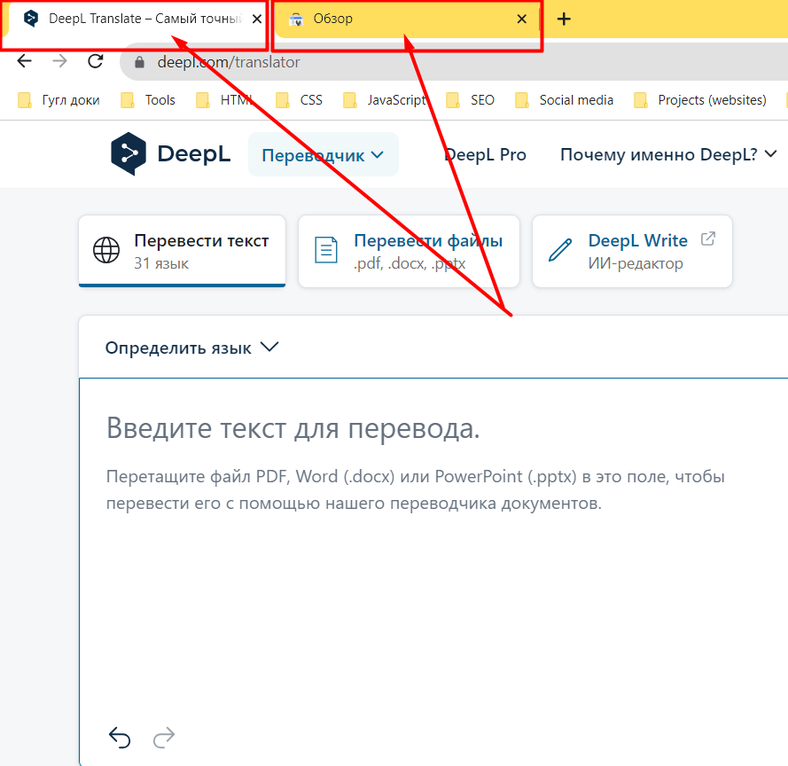
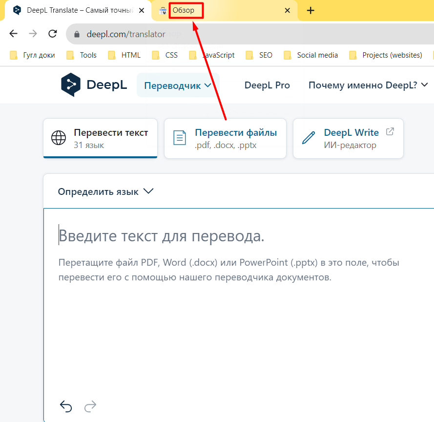
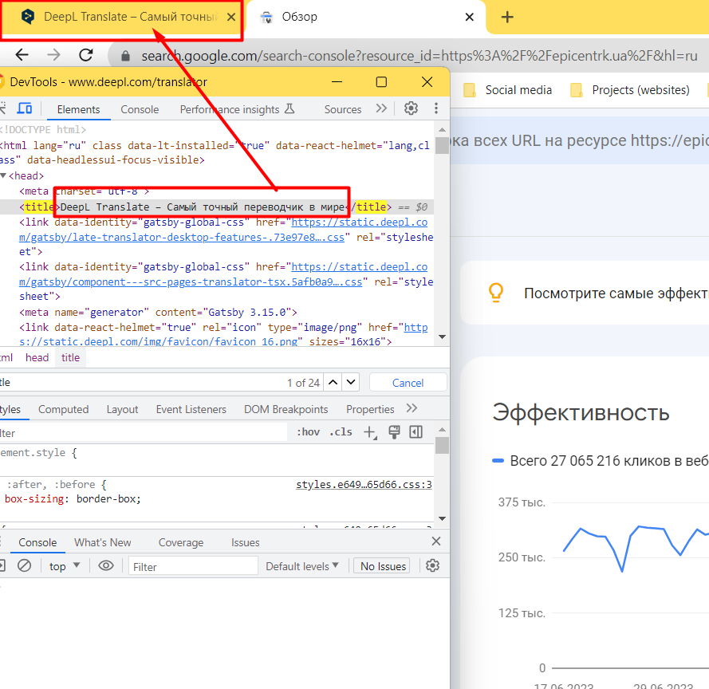

Призначення елементу title згідно специфікації HTML5 і рекомендаціям від Google
head елементі, який не містить інших title елементів.
The title element represents the document's title or name. Authors should use titles that identify their documents even when they are used out of context, for example in a user's history or bookmarks, or in search results. The document's title is often different from its first heading, since the first heading does not have to stand alone when taken out of context.
There must be no more than one title element per document.
Таким чином елемент title уособлює заголовок або назву документу. Значення для цього тегу слід підбирати таким чином щоб воно максимально описувало вміст розглядаємого документа. Для перевірки корекності можна використовувати наведений приклад:
Таким чином в браузері має відображатись дві вкладки з будь-якими сайтами.

Якщо по тексту можна зрозуміти що собою представляє документ, тоді скоріше за все title написаний коректно. Але з нашого показового сайту не зрозуміло що уособлює в собі документ. document.title === 'Обзор' //true Тому скоріш за все тут помилка.

Тепер нам зрозуміло що саме уособлює документ, з огляду на його опис document.title === 'DeepL Translate – Самый точный переводчик в мире' //true це якийсь перекладач.

У документі має бути не більше одного елемента title.
title має бути стислим та інформативним.
Підсумуючи додам що на початку тега title необхідно прописувати високочастотний ключовий запит бажано не змінюючи словоформу.